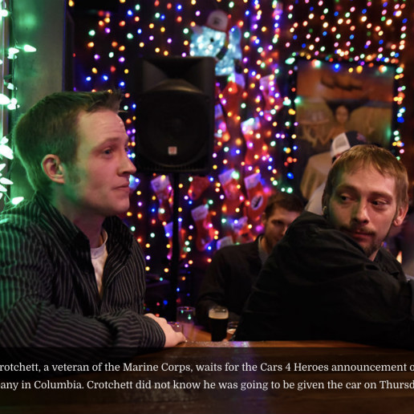

I'm
Yutong Yuan
a grad student studying data journalism at
University of Missouri.
I love finding stories in data and telling them through graphics.
I'm a true believer of the magic of data and
a constant learner of
digital tools.

'Car Santa' keeps veterans on the road this Christmas season
When Michael Crotchett received the call from Cars 4 Heroes, he knew he had a chance to win a truck because he was one of many applicants. But he didn’t yet know he was the winner.